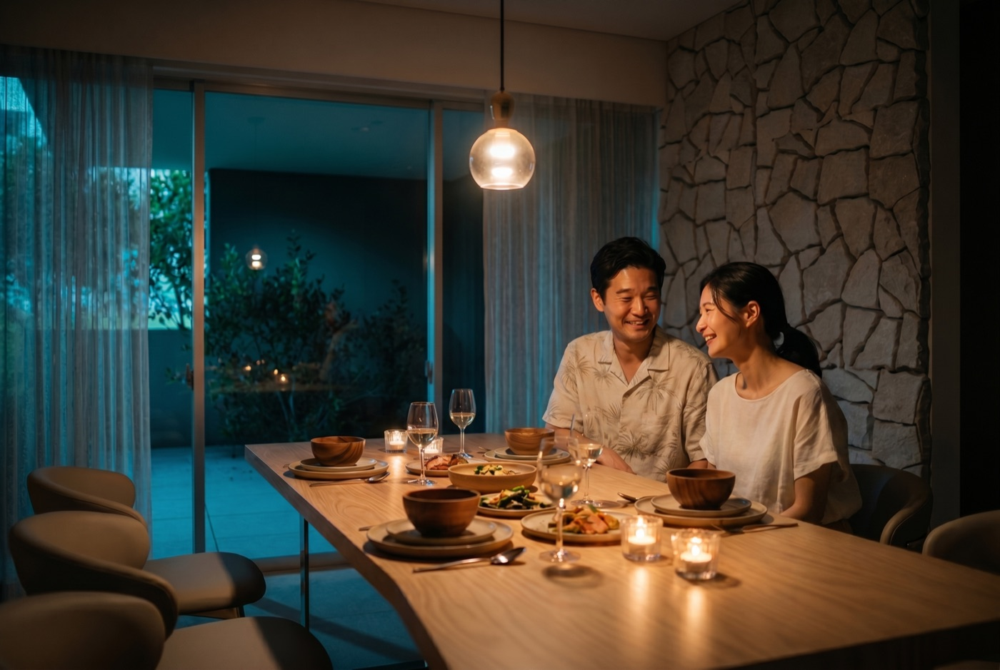
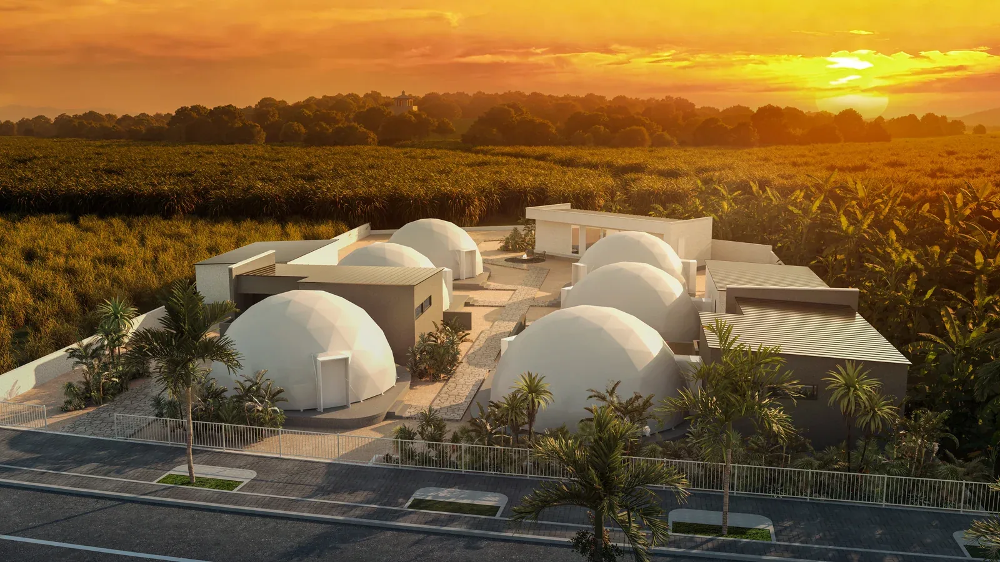
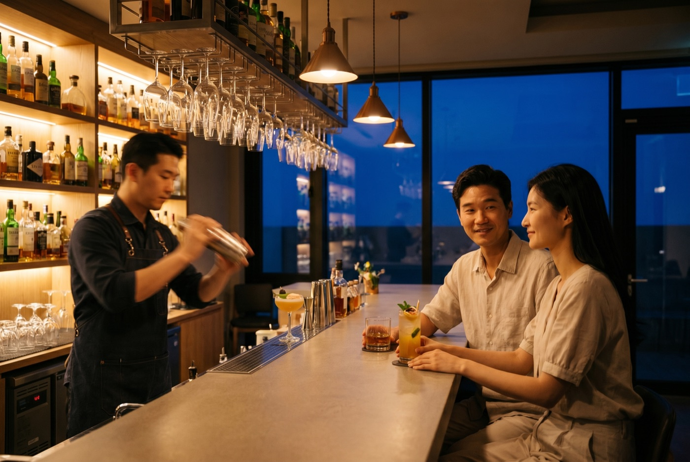
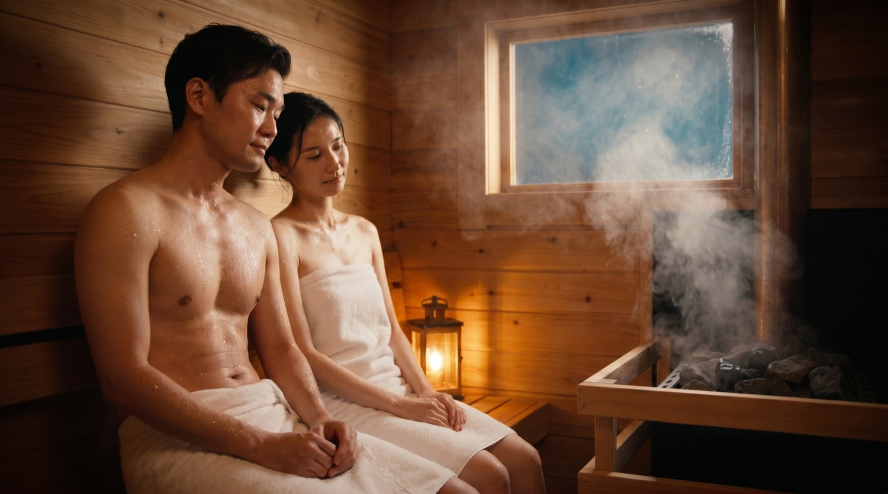
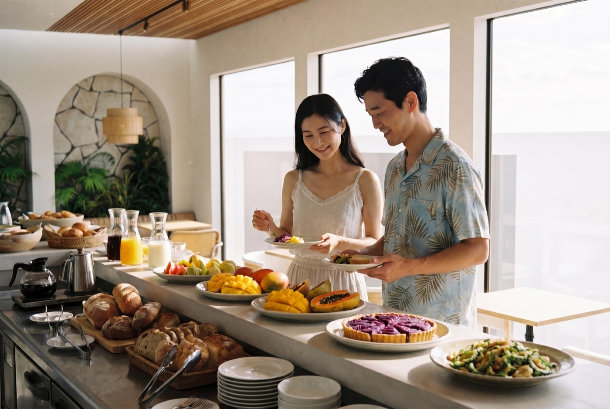
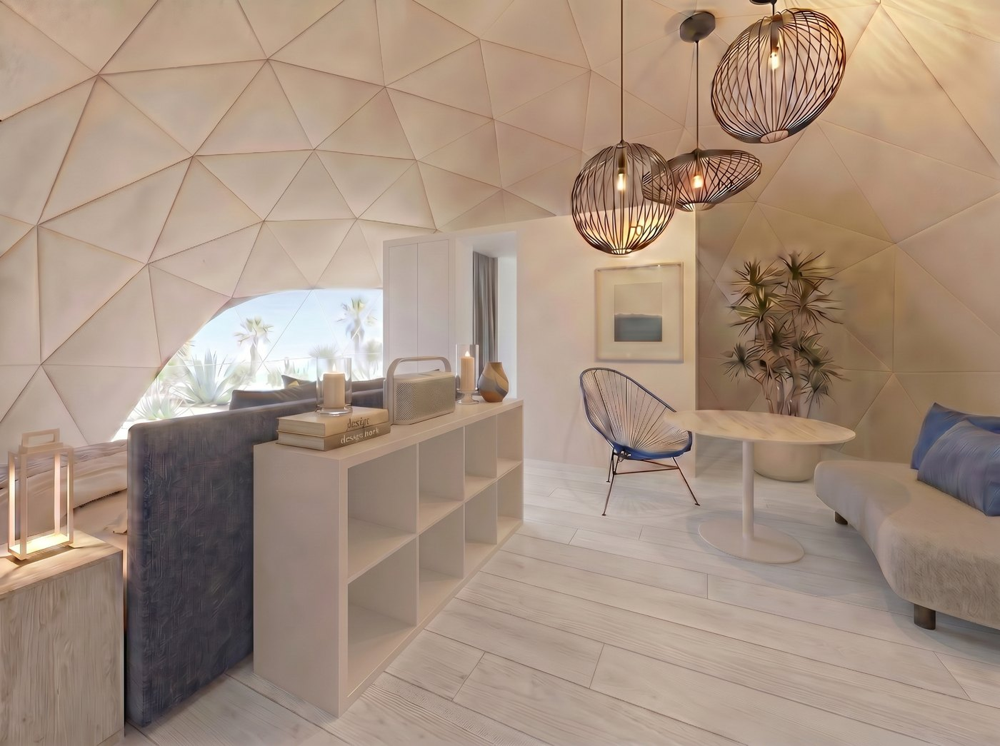
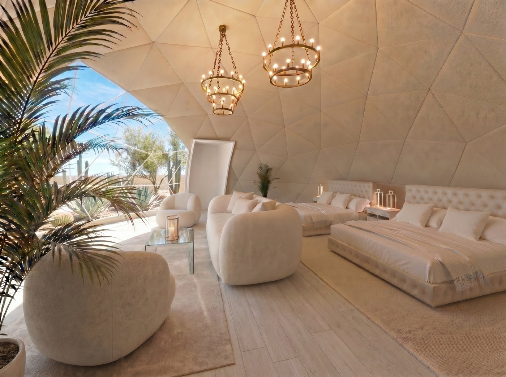
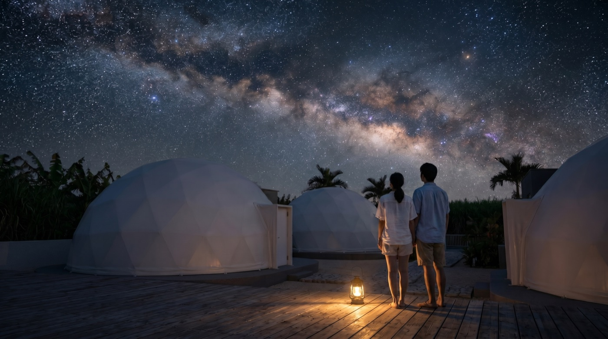
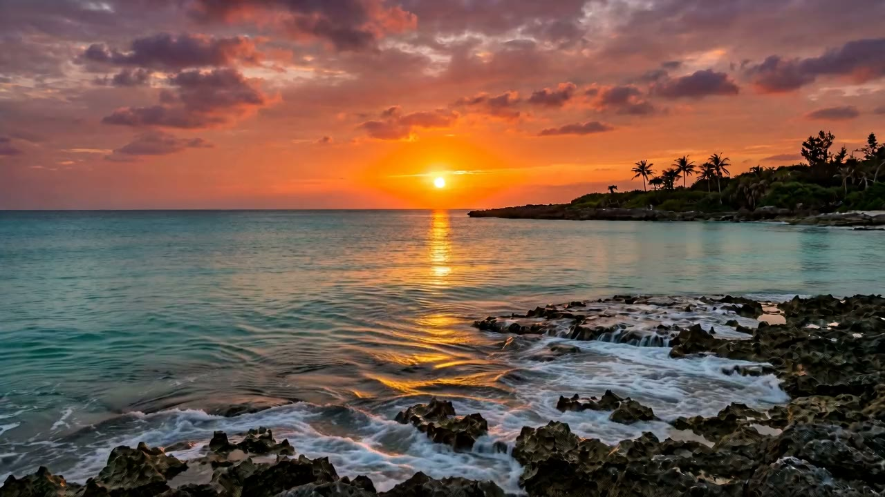
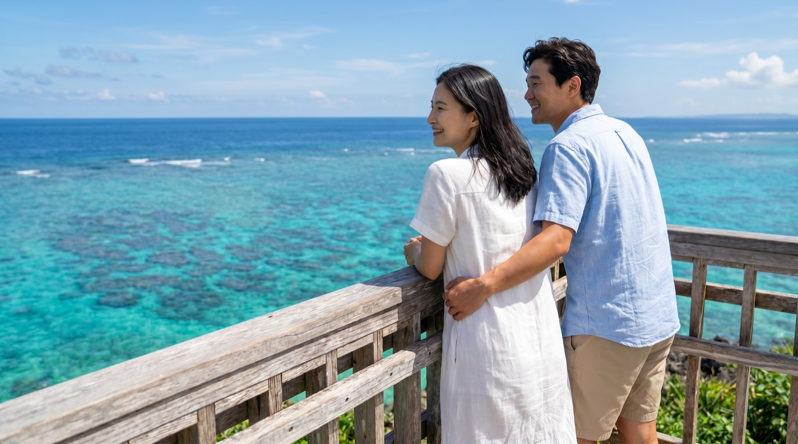

Island Dinner島のディナー
All-inclusive dining built around Miyakojima ingredients and a relaxed evening rhythm.
宮古島の食材を楽しみながら、ゆっくり過ごせるオールインクルーシブのディナー。

Now Open2026年7月30日オープン
Officially opened on July 30, 2026, TOPPURI brings six private villa glamping rooms, island dining, a private bar, sauna, breakfast, and quiet Miyakojima nights to Bora, Gusukube.
2026年7月30日、宮古島・城辺保良にTOPPURIがオープン。6棟のプライベートなヴィラグランピング、島の食材を楽しむディナー、プライベートバー、サウナ、朝食、そして宮古島の静かな夜を楽しめる滞在先です。
Now Open Updateオープンのお知らせ
TOPPURI has moved from preview into a stay travelers can now plan. The experience is shaped around quiet rooms, local flavors, island evenings, and the kind of night sky that makes a trip feel remembered.
TOPPURIは予告の段階から、実際に滞在を計画できる場所へ。静かな客室、島の味わい、夜の時間、そして旅の記憶に残る星空まで、宮古島らしい滞在が整えられています。
What Makes the Stay Feel Complete滞在を満たすもの
TOPPURI is not only a place to sleep. It is designed as a full Miyakojima stay, where meals, quiet time, and the feeling of the island are part of the experience.
TOPPURIは、ただ泊まるだけの場所ではありません。食事、静かな時間、島の空気まで含めて、宮古島での滞在をゆっくり楽しめる場所です。

All-inclusive dining built around Miyakojima ingredients and a relaxed evening rhythm.
宮古島の食材を楽しみながら、ゆっくり過ごせるオールインクルーシブのディナー。

A quiet place to end the night with conversation, drinks, and the feeling of being away.
会話とドリンクを楽しみながら、旅先らしい夜を過ごせるプライベートバー。

A slower reset after beach days, drives, and exploring the southern side of the island.
ビーチやドライブのあとに、身体をゆるめて整えるサウナ時間。

A soft morning start before another day of Miyakojima beaches, bridges, and open sky.
宮古島の海や橋、広い空へ出かける前に、やさしく始まる朝食。

Dome Stayドームステイ
Rounded forms, island light, and a stay that feels different from a standard hotel room.
丸みのあるドーム空間と島の光を感じる、ホテルとは少し違う滞在。

Deluxe Roomデラックスルーム
A relaxed villa-style setting for families, friends, and travelers who want a little more space.
家族や友人との滞在にも心地よい、ゆとりのあるヴィラスタイルの空間。
Suite Previewスイートプレビュー
Warm stone, calm bathing spaces, and a more private way to end the day.
あたたかな石の質感、落ち着いたバス空間、一日の終わりを静かに過ごせる雰囲気。
Why My Miyakojima Is Watching TOPPURIMy Miyakojimaが注目する理由
TOPPURI feels suited for travelers who want the beauty of Miyakojima without rushing: beach days, sunset drives, quiet dinners, and a place that still feels special when they return at night.
TOPPURIは、宮古島を急がずに楽しみたい旅行者に合う滞在先。ビーチ、夕暮れのドライブ、静かな食事、そして夜に帰る場所まで特別に感じられる空間です。



Images are used from TOPPURI's official website and reservation gallery; some property views are completion or promotional visuals.TOPPURI公式サイトおよび公式予約ページの掲載画像を使用しています。一部は完成イメージまたはプロモーション用ビジュアルです。
Official Reservations Now Live公式予約ページ公開中
View current room information, availability, policies, and children's rates through TOPPURI's official reservation page.
TOPPURI公式予約ページで、客室情報、空室状況、キャンセルポリシー、お子様料金をご確認いただけます。
View Official Reservations 公式予約ページを見る